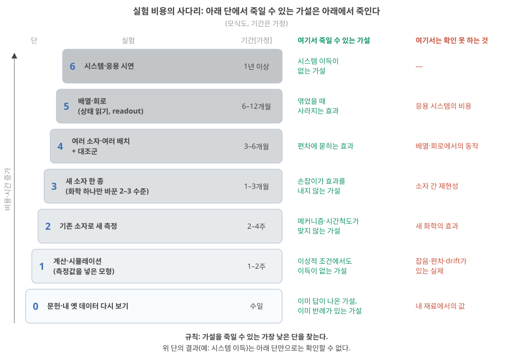
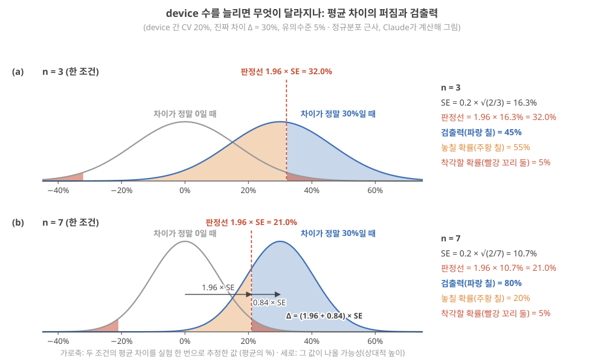
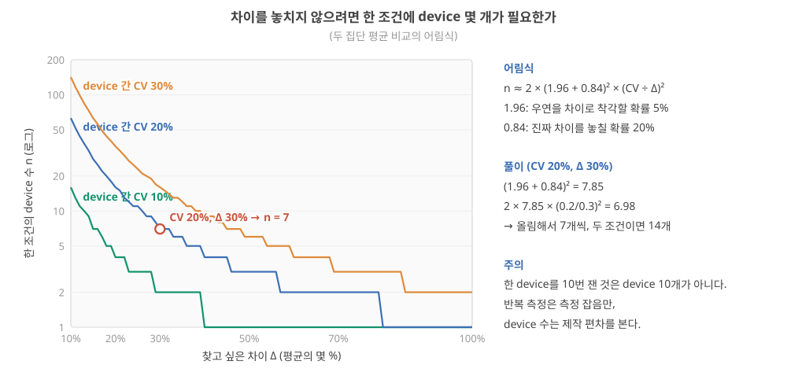
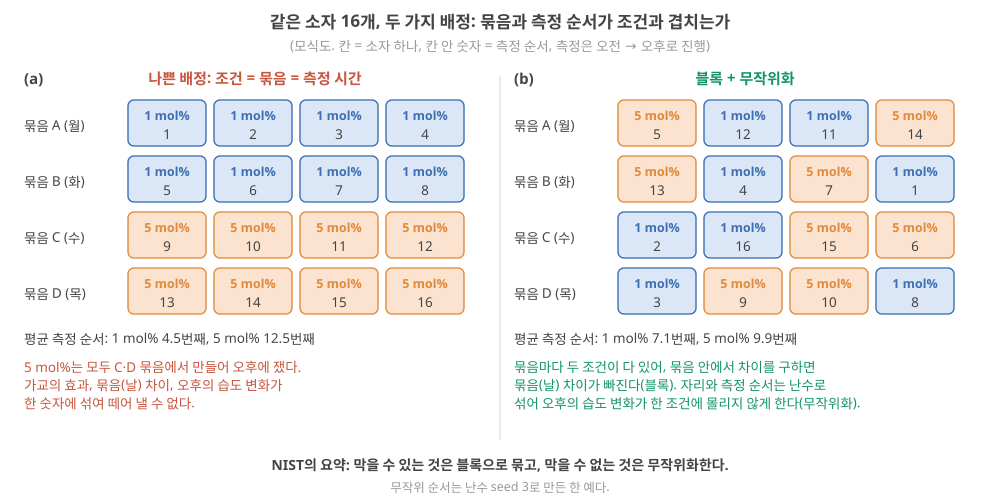
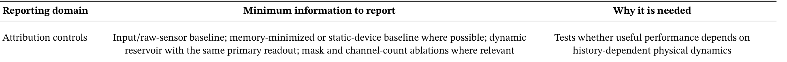
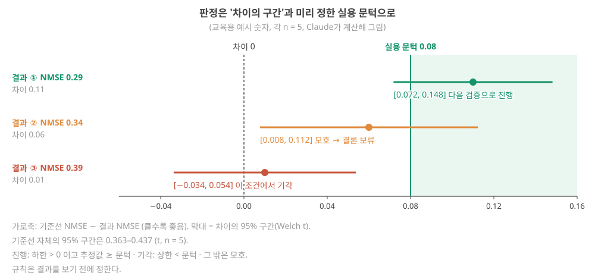
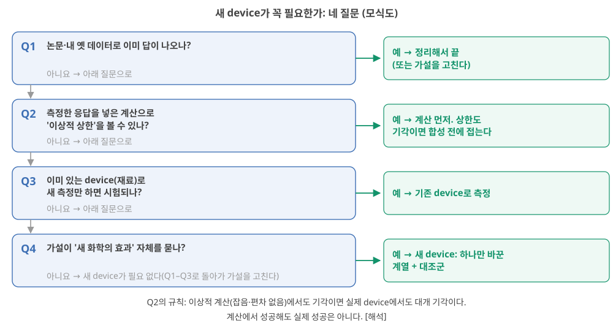
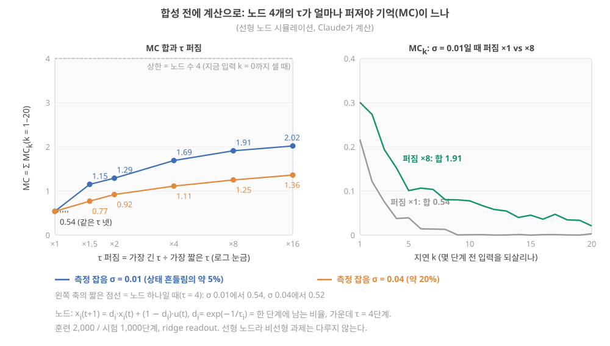
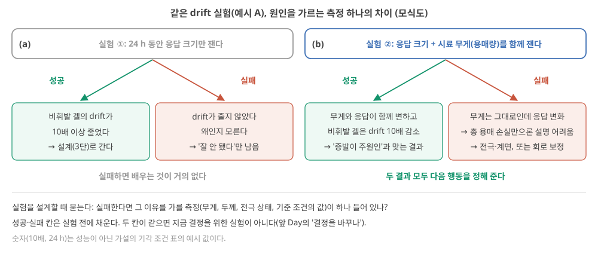

Day 48. 최소 검증 실험
Phase 5 · 나는 무엇을 연구해야 하는가
이번 질문 — 각 후보의 최소 검증 실험은 무엇이고, 성공하면 무엇이 달라지며 실패하면 무엇을 배우는가?
배울 핵심 — 최소 검증 실험과 기각 조건·실험 비용의 사다리, 소자 수·검출력과 블록·무작위화, 가설마다 고르는 기준선, 차이의 구간으로 지지·모호·기각 판정
이후 쓰이는 곳 — Day 49–50에서 접는 기준 장부를 대조해 한다/좁힌다/접는다를 결정, 실제 연구에서 합성 전에 기존 소자·계산으로 가설을 먼저 판정
지난 학습 복습
지난 학습 단위(Day 47 · 가장 중요한 가설)의 핵심을 다른 예로 확인합니다. 고르는 즉시 맞았는지와 이유가 보입니다. 틀려도 아래 학습자료는 그대로 열려 있고, 틀린 문제에는 다시 볼 곳이 붙습니다.
사전 테스트 (선택)
사전 테스트 펼치기 · 배우기 전에 짐작해 보는 문제 (선택)
학습자료
지난 학습(Day 47)에서는 가설 후보를 세우는 방법을 봤습니다. 짧게 다시 말하면, 가설은 "무엇을 바꾸면 무엇이, 왜 바뀌는가"를 틀릴 수 있게 쓴 한 문장이었고(Day 47 기초: 가설), 좋은 가설에는 "왜 필요한가"와 "왜 그렇게 되는가"의 두 사슬이 붙으며 그 사슬의 가장 약한 고리부터 시험한다고 했습니다(Day 47 기초: 두 사슬). 이번 질문은 그다음입니다. 각 후보의 최소 검증 실험은 무엇이고, 성공하면 무엇이 달라지며 실패하면 무엇을 배우는가?
이번에도 답은 내가 씁니다. 자료는 실험을 설계하는 판단 기준을 줍니다. Day 47의 예시 후보 다섯 개(Day 47 3구간: 예시 후보 다섯 개; A: 이온겔 drift를 설계로 줄인다, B: 접합 정류가 생리 식염수에서 남는다, C: 화학으로 τ 분포를 넓히면 기억이 는다, D: 이온 소자는 유리하다, E: µV 계면 소자가 증폭기 일부를 대신한다) 중 관문을 통과했거나 좁혀서 다시 들어온 A, B, C, E를 예로 씁니다(D는 반증할 수 없는 문장이라 관문에서 빠졌습니다). 이 Day에서 A–E는 후보의 이름이고, 역시 예시일 뿐입니다.
- "최소 검증 실험"은 무엇이고, 왜 "가설을 가장 싸게 죽이는 실험"이 좋은 실험인가?
- 무엇을, 몇 개를, 몇 번 재야 하나? 반복 측정과 소자 수는 무엇이 다른가?
- 무엇과 비교하나? 가설의 종류마다 필요한 기준선(baseline, 소자에서 재료를 하나씩 뺀 비교 대상)은 무엇인가?
- 기각 조건(kill criteria)은 어떻게 숫자로 정하나? 왜 결과를 보기 전에 정해야 하나?
- 새 소자가 꼭 필요한가? 기존 데이터·계산·기존 소자로 먼저 볼 수 있는 부분은?
- 성공하면 무엇이 달라지고, 실패하면 무엇을 배우나? 접는 기준 장부에는 무엇을 적나?
1. 최소 검증 실험: 가설을 가장 싸게 죽이는 실험
이 구간을 읽고 나면 최소 검증 실험과 기각 조건의 뜻을 말하고, 실험 비용의 사다리(문헌 → 계산 → 기존 소자 → 새 소자 → 여러 소자 → 배열 → 시스템)에서 내 가설을 죽일 수 있는 가장 낮은 단을 고르며, drift 예시로 재보정 주기 요구를 숫자로 바꿀 수 있다.
왜 필요한가. 연구 계획은 흔히 "소재 합성 → 소자 제작 → 특성 측정 → 배열 → 응용 시연" 순서로 짜입니다. 이 순서대로 가면 가설이 틀렸다는 것을 1–2년 뒤 응용 시연 단계에서야 알 수 있습니다. 가장 비싼 단계를 다 지난 뒤입니다. 그래서 순서를 뒤집어 묻습니다. 이 가설이 틀렸다면, 그것을 가장 빨리, 가장 싸게 알 수 있는 실험은 무엇인가?
최소 검증 실험과 기각 조건
최소 검증 실험(minimal experiment)은 가설 사슬의 가장 약한 고리를 가장 낮은 비용으로 시험하는 실험입니다. "가장 작은 실험"이 아니라 "가설을 죽일 수 있는 가장 싼 실험"입니다. 가설을 죽일 수 없는 실험(어떤 결과가 나와도 가설이 살아남는 실험)은 아무리 싸도 최소 검증 실험이 아닙니다. 이 Day의 내 답 양식 안내 문장 그대로, "완성된 소자로 MNIST 95%"는 최소 실험이 아닙니다. 비싸고, 결과가 좋아도 어느 고리가 성립했는지 모르기 때문입니다.
기각 조건(kill criteria)은 결과를 보기 전에 숫자로 적어 둔 "이 결과가 나오면 이 가설을 접는다"입니다. 짝으로 성공 조건("이 결과면 다음 단으로 간다")을 적고, 둘 사이의 모호 구간에서는 무엇을 할지(예: 소자 수를 늘려 한 번 더)도 미리 적습니다(4구간). 기각 조건이 없으면 실험이 끝나도 결정을 할 수 없습니다. 어떤 결과도 "조금 더 해 보면"으로 읽히기 때문입니다.
세 가지를 한 벌로. 최소 실험 하나에는 늘 (1) 측정량과 단위, 반복·소자 수(2구간), (2) 기준선(3구간), (3) 성공·모호·기각의 숫자(4구간)가 붙습니다. 하나라도 빠지면 실험이 끝난 뒤 판정할 수 없습니다.
실험 비용의 사다리. 실험에는 비용이 다른 단이 있습니다. 그림 1의 읽는 법: 아래에서 위로 갈수록 비싸고 오래 걸립니다(기간은 가정). 오른쪽 두 열이 핵심입니다. 초록은 그 단에서 죽일 수 있는 가설, 빨강은 그 단에서는 확인할 수 없는 것입니다. 규칙은 하나입니다. 내 가설을 죽일 수 있는 가장 낮은 단을 찾습니다.

Day 10의 사다리와 다른 점. Day 10에도 사다리가 있었지만 축이 다릅니다. Day 10의 사다리(현상 재현 → 과제 → 읽을 수 있는 상태 → 학습한 readout → held-out → 기준선 → 시스템 비용)는 무엇을 증명했나의 단계였고(Day 10 2구간), 이번 사다리는 실험이 얼마나 비싼가의 단계입니다. 그래서 싼 단(예: 기존 소자로 새 측정)에서도 held-out(학습에 쓰지 않고 떼어 둔 데이터)과 기준선을 갖춘 판정을 할 수 있습니다.
작은 숫자로: drift 가설(예시 A)의 최소 실험. 먼저 낱말 둘을 되짚습니다. 물리 reservoir는 입력 이력을 내부 상태로 바꾸는 고정된 물리계(여기서는 이온 소자)이고, readout은 그 상태에 가중치를 곱해 더하는 마지막 층으로, 이것만 정답이 붙은 데이터로 학습합니다(Day 13 기초: reservoir 상태). 소자가 변하면 같은 readout이 덜 맞게 되어 다시 학습해야 합니다. Day 47의 예시 A는 "비휘발 용매 + 가교로 이온겔의 drift를 줄여, 같은 readout을 1주 이상 쓰게 한다"였고, 그 사슬에서 가장 약한 고리는 "설계 → 용매량·확산계수 유지"였습니다. 이 고리에 매긴 믿음은 0.6이었습니다(믿음 \(p\)는 '이 고리가 성립한다'고 내가 믿는 정도를 0–1로 적은 주관적 값, Day 47 2구간: 그림 1의 숫자). 이 고리를 새 소재 없이 시험할 수 있는지 봅니다. 여기서 drift 속도는 같은 입력에 대한 응답이 시간당 몇 % 변하는가이고(Day 32: drift 속도), Day 32에서 본 대로 같은 readout을 다시 학습하지 않고 쓸 수 있는 기간(재보정 주기)은 대략 "허용 drift ÷ drift 속도"입니다(Day 32 4구간: 재보정 주기).
단계 1 — 요구를 숫자로. readout이 응답 크기 5% 변화까지는 견딘다고 합시다(가정). 1주 = 168시간을 버티려면 drift 속도는 5% ÷ 168 h ≈ 0.03%/h 이하여야 합니다.
단계 2 — 지금 값을 잰다(사다리 2단, 기존 소자). 실험실에 이미 있는 이온겔 소자를 실온·대기에서 24시간 동안 1시간마다 같은 펄스로 재고, 응답 크기와 τ, 그리고 시료 무게(용매가 날아가는 양)를 함께 기록합니다. 응답이 시간당 2%씩 줄었다면 지금 재보정 주기는 5% ÷ 2%/h = 2.5시간입니다.
단계 3 — 필요한 개선 배수. 2%/h를 0.03%/h로 낮춰야 하므로 2 ÷ 0.0298 ≈ 67배 개선이 필요합니다. 이 숫자 하나가 가설의 무게를 바꿉니다. 67배는 "조성을 조금 바꾸면" 되는 크기가 아닐 수 있습니다.
단계 4 — 원인을 먼저 가른다. 같은 24시간 기록에서 무게 감소와 응답 변화가 함께 움직이면 "용매 증발이 drift의 원인"이라는 고리가 지지됩니다. 무게는 그대로인데 응답이 변하면 원인은 다른 곳(전극 반응, 이온의 재배치)에 있고, 비휘발 용매로 바꾸는 설계는 drift를 줄이지 못할 것입니다. 이 경우 A는 새 소재를 합성하기 전에 접히거나 바뀝니다. 2–4주짜리 실험으로 1–3개월짜리 합성을 아낍니다.
Singh 2026도 안정성 측정이 곧 알고리즘의 문제라고 씁니다. 반복마다의 흔들림은 같은 입력에 대한 상태의 분포를 넓히고, 느린 drift는 그 분포를 시간에 따라 옮겨, 앞서 학습한 readout을 덜 맞게 하고 재보정·재학습을 더 자주 필요하게 만든다는 것입니다 Singh 2026, p.19. 예시 A의 사슬 ①을 문헌이 뒷받침하는 문장입니다.
여기까지: 가설 하나를 받아 그림 1의 사다리에서 그 가설을 죽일 수 있는 가장 낮은 단을 고르고, drift 예에서 요구(0.03%/h) → 지금 값(2%/h, 재보정 주기 2.5시간) → 필요한 개선(약 67배) → 원인 가르기(무게)를 숫자로 따라갈 수 있다. 다음: 실험 하나를 적을 때 쓰는 낱말과, 소자 하나에서 숫자 하나를 얻는 측정 순서.
- 최소 검증 실험 = 가설 사슬의 가장 약한 고리를 가장 낮은 비용의 단에서 시험해, 가설을 죽일 수 있는 가장 싼 실험. 가설을 죽일 수 없는 실험은 싸도 최소 실험이 아니다.
- 기각 조건 = 결과를 보기 전에 숫자로 적은 "이 결과면 접는다". 성공 조건·모호 구간의 행동과 한 벌로 적는다.
- 실험 사다리: 문헌 → 계산 → 기존 소자 → 새 소자 → 여러 소자 → 배열 → 시스템. 죽일 수 있는 가장 낮은 단을 고른다.
- drift 예: 허용 5% ÷ 168 h ≈ 0.03%/h가 필요. 지금 2%/h면 재보정 주기 2.5 h, 필요한 개선 약 67배. 무게(용매 증발)와 응답을 함께 재면 합성 전에 원인을 가를 수 있다.
2. 무엇을 몇 번, 어떻게 재나: 설계의 낱말, 측정 프로토콜, 소자 수와 검출력, 블록과 무작위화
이 구간을 읽고 나면 내 겔 소자 실험에서 독립·종속·통제 변수와 대조군, 실험 단위를 가려 적고, 펄스 한 번에서 τ·MC·NMSE가 각각 소자당 숫자 하나가 되는 측정 순서를 따라가며, 반복 측정과 소자 수가 각각 무엇의 흔들림을 보는지 구별하고, 소자 간 편차(CV)와 찾고 싶은 차이로 한 조건에 필요한 소자 수를 어림하며(그 식이 그림 2의 두 종 모양에서 나오는 과정까지), 제작 묶음과 측정 순서를 블록·무작위화로 배정할 수 있다.
왜 필요한가. "가교제를 늘린 소자의 τ가 1.3배 길었다"는 결과가 소자 하나씩의 비교라면, 그 1.3배가 화학 때문인지 우연히 그 소자가 길었기 때문인지 알 수 없습니다. 몇 개를 재야 하는지는 소자들이 원래 얼마나 다른지와 얼마나 작은 차이를 보고 싶은지로 정해집니다. 그 전에 실험 설계의 낱말과, 소자 하나에서 숫자 하나를 얻는 측정 순서를 먼저 정해 둡니다.
실험 설계의 낱말: 바꾸는 것, 재는 것, 같게 두는 것
왜 필요한가. 실험 계획을 한 줄로 적으려면 "무엇을 일부러 바꾸고, 무엇을 재고, 무엇을 같게 두나"를 갈라 적어야 합니다. 이 셋이 섞이면 결과가 나와도 무엇 때문인지 말할 수 없습니다(Day 47의 교란변수).
세 가지 변수. Day 47의 예시 가설 "가교제를 늘리면 τ가 길어진다"를 실험으로 옮기면 이렇습니다.
| 이름 | 뜻 | 내 겔 소자의 예 |
|---|---|---|
| 독립변수(independent variable, 요인) | 내가 일부러 정해서 바꾸는 것. 그 값 하나하나를 수준(level)이라 부른다 | 가교제 농도 1, 3, 5 mol%(세 수준) |
| 종속변수(dependent variable, 측정량) | 독립변수를 바꾼 결과로 재는 것. 단위와 계산법까지 정한다 | τ(ms). 펄스 뒤 응답이 처음의 37%로 줄 때까지의 시간(아래 측정 프로토콜) |
| 통제변수(controlled variable) | 결과에 영향을 줄 수 있어 같게 맞추거나, 맞추지 못하면 재서 기록하는 것 | 두께(예: 100 µm ± 5%), 함수율(무게로 잼), 전극, 온도·습도, 펄스 높이·폭, 측정 전 쉬는 시간 |
교란변수(Day 47)는 통제하지 못한 변수가 독립변수와 함께 움직인 경우입니다. 가교제를 늘릴 때 함수율이 함께 줄었던 예가 그것이었습니다(Day 47 5구간: 가교제와 함수율). 3구간의 기준선 표에서도 "같게 둘 것" 열로 통제변수가 다시 나옵니다.
대조군(control group)은 바꾸려는 성분만 빼고 나머지를 똑같이 만들고 잰 시료 묶음입니다. 예: "이온액체 첨가제 X가 τ를 늘린다"면 X를 넣지 않은 같은 겔이 대조군이고, 같은 날 같은 방법으로 붓고 같은 프로토콜로 잽니다. 가교제처럼 "0"이면 겔이 되지 않는 성분은 지금 쓰는 기준 조성(예: 1 mol%)이 대조군 역할을 합니다. Day 28–29의 기준선(Day 28 기초: 기준선)과 겹치는 말이지만, 기준선은 원시 입력·소프트웨어·회로까지 포함하는 넓은 비교 대상이고, 대조군은 같은 실험 안에서 처리 하나만 뺀 시료를 가리킬 때 씁니다. 해석
실험 단위(experimental unit)는 독립변수가 따로따로 적용되는 가장 작은 단위입니다. 가교제 농도는 겔을 부을 때 정해지므로, 이 실험의 실험 단위는 따로 부은 겔 소자 하나입니다. 아래 "반복 측정과 소자 수"의 구분이 이 낱말에서 나옵니다.
측정량과 단위를 함께. 소자 수를 정하기 전에 무엇을 재는지가 정해져야 합니다. 같은 "기억"도 τ(s, 모형의 시간상수), retention(s, 써 둔 상태가 정한 기준 안에 남는 시간이라 기준과 허용오차에 따라 달라지는 지표), 지연별 memory capacity(무차원)가 다른 양이었습니다(Day 22 기초). 같은 "비선형"도 정류비(무차원), 고조파 비율, 차수별 정보처리용량이 다른 양이었습니다(Day 24–25). 양식의 "측정량과 단위" 칸에 하나를 고르고, 그 양을 어떤 프로토콜(펄스 높이·폭·간격, 측정 전 쉬는 시간)로 재는지까지 적어야 다른 사람이 같은 실험을 할 수 있습니다. Singh 2026의 보고 체크리스트도 자극 진폭, 펄스 폭, 입력 간격, 측정 전 처리와 회복 절차를 최소 보고 항목으로 둡니다 Singh 2026, p.20.
측정 프로토콜을 처음부터 끝까지. 두 단자 이온겔 소자 하나로 τ, MC, NMSE가 각각 어떻게 숫자 하나가 되는지 따라갑니다. 전압·시간 값은 모두 설명용 예시입니다[가정].
단계 1 — 쉬게 하고 기준값을 잰다. 앞 측정의 흔적을 지우려고 소자를 0 V에서 5분 쉬게 합니다. 그다음 상태를 거의 바꾸지 않는 작은 읽기 전압(예: 0.1 V)에서 전류를 잽니다. 이것이 기저 전류 \(I_0\)입니다(예: 500 nA). 온도·습도도 이때 적습니다. 읽기 전압이 정말 상태를 바꾸지 않는지는, 읽기만 여러 번 되풀이해 값이 그대로인지로 확인합니다.
단계 2 — 입력 펄스를 건다. 쓰기 펄스(예: +1 V, 폭 10 ms) 하나를 겁니다. 펄스의 높이와 폭이 "입력의 크기"이고, 이것을 바꾸면 다른 실험이 됩니다. 그래서 프로토콜에 적습니다.
단계 3 — 읽는다. 펄스가 끝난 순간을 \(t\) = 0으로 두고, 읽기 전압에서 1 ms마다 전류 \(I(t)\)를 기록합니다. 펄스가 남긴 변화만 보려고 응답을 \(\Delta I(t) = I(t) - I_0\)로 정의합니다. 예: \(\Delta I(0)\) = 100 nA, \(\Delta I\)(10 ms) = 60.7 nA, \(\Delta I\)(20 ms) = 36.8 nA.
단계 4 — τ를 계산한다. 응답이 지수 하나 \(\Delta I(t) = \Delta I(0)\,e^{-t/\tau}\)로 준다고 가정하면(모형), 두 시점만으로 \(\tau = t \div \ln[\Delta I(0)/\Delta I(t)]\)입니다. 10 ms 값으로: ln(100 ÷ 60.7) = ln 1.647 = 0.499, τ = 10 ms ÷ 0.499 ≈ 20 ms. 확인하면 \(t\) = 20 ms에서 \(\Delta I\)가 처음의 36.8%, 곧 1/e입니다(Day 22 1구간). 실제로는 모든 점에 곡선을 맞추고(fitting), 지수 하나로 맞지 않으면(빠른 성분과 느린 성분이 섞이면) τ 하나로 요약하지 않습니다.
단계 5 — 반복 측정을 소자 값 하나로. 같은 소자에 1–4단계를 5번 되풀이해(반복 측정) τ 다섯 개를 얻고, 그 평균을 이 소자의 τ로 씁니다. 다섯 값의 퍼짐은 반복 간 흔들림으로 따로 적습니다(Day 32). 판정에 들어가는 것은 소자당 숫자 하나입니다.
단계 6 — MC와 과제 오차(NMSE)는 입력열로. 이번에는 펄스 하나가 아니라 −1~1의 난수 입력열 \(u(1), u(2), \dots\)를 펄스 높이(예: ±0.5 V)로 바꿔 일정 간격(예: 20 ms, τ와 비슷하게)으로 넣고, 펄스마다 정한 시각에 전류를 읽어 상태 \(x(t)\)를 만듭니다. 처음 몇십 단계는 버립니다(washout). 상태가 숫자 하나뿐이면 기억 용량도 그만큼 작으므로(MC ≤ 상태 수, Day 20 기초), 펄스 사이에 여러 시각을 읽거나(Day 17 기초: 시간 다중화) 소자 여러 개를 씁니다.
- MC: 앞부분(훈련, 예: 2/3)으로 지연 \(k\)마다 "\(u(t-k)\)를 맞히는" readout을 학습하고, 뒷부분(시험, 예: 1/3)에서 예측과 정답의 상관계수 제곱을 구하면 \(MC_k\), \(k\)에 대해 더하면 MC입니다(손으로 따라가기는 Day 22 2구간).
- NMSE: 입력열을 과제의 입력(예: NARMA10)으로 바꾸고, 훈련 구간에서 readout을 학습한 뒤 시험 구간에서 NMSE = 평균[(정답 − 예측)²] ÷ 정답의 분산을 계산합니다(Day 20 기초: NMSE).
- 시험 구간은 held-out(훈련에 쓰지 않고 떼어 둔 데이터, Day 10 기초 4)입니다. readout의 가중치뿐 아니라 규제 세기·읽는 시각 같은 선택에도 쓰지 않습니다. 시험 구간을 보고 고른 설정은 그 시험 구간에 맞춰진 것이라, 새 데이터에서의 성능을 부풀립니다.
단계 7 — 장부에 적는다. 소자마다 τ(ms), MC, NMSE를 숫자 하나씩, 그리고 프로토콜(쉬는 시간, 읽기 전압, 펄스 높이·폭·간격, 훈련/시험 길이, 온도·습도, 제작 묶음, 측정 순서)을 적습니다. 이 소자별 숫자 \(n\)개가 아래 소자 수 어림식과 4구간 구간 계산의 재료입니다.
여기까지: 내 실험 하나를 독립·종속·통제 변수, 대조군, 실험 단위로 적고, 펄스 한 번에서 τ를(100 → 60.7 nA, 10 ms면 20 ms), 입력열에서 MC·NMSE를 소자당 숫자 하나로 만드는 순서를 따라갈 수 있다. 다음: 그 숫자를 소자 몇 개에서 얻어야 하나.
두 가지 흔들림. Day 32을 짧게 다시 말하면, 같은 소자에 같은 입력을 반복해 넣어도 응답이 조금씩 다르고(반복 간 흔들림), 같은 방법으로 만든 소자끼리도 다릅니다(소자 간 편차). 흔들림의 크기는 표준편차(평균에서 얼마나 퍼져 있나)로, 상대 크기는 변동계수 CV(표준편차 ÷ 평균)로 적었습니다. Day 32의 예에서(Day 32: CV 계산) 명목상 같은 소자 다섯 개의 τ가 8, 10, 12, 10, 10 ms이면 평균 10 ms이고, 표본 표준편차(개수 − 1로 나눔, 이 Day에서도 기본으로 씀) 1.41 ms, CV 14.1%였습니다. 개수로 나누면 1.26 ms, CV 12.6%입니다(Day 32 기초).
반복 측정과 소자 수, 그리고 몇 개를 재야 하나
한 소자를 10번 잰 것은 소자 10개가 아니다. 같은 실험 단위를 다시 재는 것은 반복 측정(repeated measurement, repeat)이고, 실험 단위를 새로 만드는 것은 독립 반복(replicate)입니다. 아래 영상의 말로는 기술적 반복과 생물학적 반복입니다. 한 소자를 10번 재면 그 소자의 측정·동작 흔들림이 보입니다. 소자 10개를 한 번씩 재면 제작 편차가 보입니다. "가교제가 τ를 늘린다"는 화학의 효과에 관한 주장이고 실험 단위가 소자이므로, 비교의 표본 수는 소자 수입니다. 한 소자를 여러 번 잰 값을 소자 여러 개인 것처럼 세면 차이가 실제보다 확실해 보입니다. 생태학자 Hurlbert는 이처럼 독립이 아닌 반복으로 처리의 효과를 통계 검정하는 것을 유사 반복(pseudoreplication)이라 불렀습니다(Hurlbert 1984, Ecol. Monogr. 54, 187–211) 서지와 초록만 웹에서 확인. 반복 측정은 소자별로 먼저 평균을 내서 그 소자의 값 하나를 정확히 하는 데 쓰고(앞 프로토콜의 단계 5), 그 소자별 값 \(n\)개가 비교의 표본입니다.
몇 개가 필요한가: 그림부터. 두 조건(예: 가교제 1 mol% vs 5 mol%)을 비교하는 실험을 한 번 하면, 두 조건의 평균 차이를 숫자 하나로 얻습니다. 같은 실험을 여러 번 되풀이한다고 상상하면 그 숫자는 매번 조금씩 다르게 나옵니다. 그 흩어짐을 그리면 가운데 값이 가장 자주 나오고 양쪽으로 갈수록 드문 종 모양이 되는데, 이 표준 모양을 정규분포(normal distribution)라 부릅니다. 여기서 쓸 정규분포의 성질은 두 개뿐입니다. 평균 ± 1.96 표준편차 안에 전체의 95%가 들어가고(양쪽 꼬리가 합쳐 5%), 평균 + 0.84 표준편차보다 아래에 80%가 들어갑니다(정규분포 표에서 읽는 값).
이 종의 폭(표준편차)을 표준오차(standard error, SE)라 부릅니다. 소자 하나하나가 CV만큼 흔들리면, \(n\)개의 평균은 CV/√\(n\)만큼만 흔들리고(많이 모을수록 덜 흔들림), 두 평균의 차이는 두 흔들림을 함께 받으므로 SE = CV × √(2/\(n\))입니다.
그림 2를 읽는 법. 가로축은 실험 한 번으로 얻은 평균 차이(평균의 %), 세로는 그 값이 나올 가능성의 상대적 높이입니다. 회색 종은 진짜 차이가 0일 때, 파란 종은 진짜 차이 Δ가 30%일 때 나올 수 있는 값들입니다. 판정 규칙을 "빨간 세로선(판정선, 1.96 × SE)보다 크게 나오면 차이 있음"으로 정하면, 진짜 차이가 0인데도 차이 있다고 착각할 확률은 5%(빨강 꼬리 두 개)입니다. 이 5%를 유의수준(significance level)이라 부릅니다. 파란 종에서 판정선 오른쪽(파랑 칠)은 진짜 차이를 찾아낼 확률로 검출력(power)이라 부르고, 판정선 왼쪽(주황 칠)은 진짜 차이를 놓칠 확률입니다. 위 패널은 한 조건에 소자 3개, 아래는 7개이고, 둘 다 소자 간 CV 20%입니다.

- 소자 3개씩(CV 20%): SE = 0.2 × √(2/3) = 16.3%, 판정선 1.96 × 16.3% = 32.0%. 진짜 차이 30%가 판정선보다 작아 파란 종의 절반 이상이 판정선 왼쪽에 떨어집니다. 검출력 45%.
- 소자 7개씩: SE = 0.2 × √(2/7) = 10.7%, 판정선 21.0%. 검출력 80%.
그림에서 어림식으로. 검출력이 80%가 되려면 판정선에서 진짜 차이까지 0.84 × SE가 더 남아야 합니다(그림 2 아래 패널의 두 화살표). 즉 Δ = (1.96 + 0.84) × SE = (1.96 + 0.84) × CV × √(2/\(n\))입니다. 양변을 제곱해 \(n\)에 대해 풀면, 두 조건의 평균을 비교할 때 한 조건에 필요한 소자 수의 어림식이 나옵니다. 소자를 늘리면 두 종이 좁아져(SE ∝ 1/√\(n\)) 겹침이 줄어든다는 것이 이 식의 내용입니다. (정규 근사) Claude 계산
\[ n \approx 2 \times (1.96 + 0.84)^2 \times \left(\frac{\text{CV}}{\Delta}\right)^2 \]
- 왜 지금 필요한가: 실험을 시작하기 전에 소자를 몇 개 만들지 정해야 비용과 기간을 잡을 수 있다.
- 기호: CV는 소자 간 변동계수(표본 표준편차 ÷ 평균), \(\Delta\)는 보고 싶은 차이(평균의 몇 %)로, 이것을 효과 크기(effect size)라 부른다. 뒤집은 비 Δ/CV는 "차이가 소자 간 흔들림의 몇 배인가"로, Day 32의 Δ/σ(신호가 잡음의 몇 배인가)와 같은 모양의 비다(Day 32 2구간: Δ/σ). 1.96은 유의수준 5%에서, 0.84는 검출력 80%에서 나온 수다(그림 2).
- 단위: 없음(개수). 결과는 올림한다.
- 계산 순서: \((1.96 + 0.84)^2 = 7.85\) → CV ÷ Δ를 제곱 → 곱하고 2배 → 올림.
- 주의: 이 식은 정규분포 근사라서 표본이 아주 적을 때(한 조건 10개 미만)는 실제로 필요한 수보다 조금 작게 나옵니다. t 분포를 쓰는 정확한 계산은 보통 1–2개를 더 요구합니다. 해석
- 결과의 뜻: CV가 두 배면 \(n\)은 네 배, Δ가 절반이면 \(n\)은 네 배다. 작은 차이를 흔들리는 소자로 보려면 소자가 아주 많이 필요하다.
- 조건: 두 조건의 흔들림이 비슷하고 대략 종 모양으로 퍼져 있다는 단순한 가정의 어림이다. 정밀한 계획에는 통계 상담이나 시뮬레이션이 낫다. 한 집단용 식 \((z_{1-\alpha/2} + z_{1-\beta})^2(\sigma/\delta)^2\)와 "σ를 모르면 t로 바꿔 한두 번 되풀이해 계산"은 NIST 2012, §7.2.2.2에 있고, 앞의 2배는 두 집단 평균의 차이가 흔들림을 두 배로 받기 때문이다(분산 \(2\sigma^2/n\)). 해석
풀이 예시 → 일부 채우기 → 혼자 풀기.
풀이 예시. CV 20%인 소자로 30% 차이를 보고 싶다면: (0.2 ÷ 0.3)² = 0.444, 2 × 7.85 × 0.444 = 6.98 → 올림해서 한 조건에 7개, 두 조건이면 14개. (t 분포로 되풀이해 보정하면 한 조건 9개) Claude 계산
같은 식, 다른 숫자. CV 10%, 차이 20%라면 (0.1 ÷ 0.2)² = 0.25, 2 × 7.85 × 0.25 = 3.9 → 4개. CV 30%, 차이 20%라면 (0.3 ÷ 0.2)² = 2.25, 2 × 7.85 × 2.25 = 35.3 → 36개. 같은 차이를 보려는데 소자 편차가 세 배 크면 소자는 아홉 배 필요합니다.
설계에 쓰는 법. 거꾸로 씁니다. 한 조건에 소자 5개밖에 못 만든다면, CV 20%일 때 볼 수 있는 차이는 \(\Delta \approx \text{CV} \times \sqrt{2 \times 7.85 / 5}\) = 0.2 × 1.77 ≈ 35%입니다(t 분포로 보정하면 약 40%) Claude 계산. 기대하는 화학 효과가 그보다 작다면, 이 실험은 결과가 "차이 없음"으로 나와도 가설을 죽이지 못합니다. 소자 수를 늘리거나 CV를 줄이는(두께를 맞추는, Day 47 5구간 ④) 것이 먼저입니다.
그림 3은 같은 어림식을 여러 경우에 대해 그린 것입니다. 가로축은 찾고 싶은 차이 Δ, 세로축은 한 조건의 소자 수 \(n\)이고, 세로축은 로그 눈금입니다. 로그 눈금에서는 같은 높이만큼 올라가면 같은 배수만큼 커집니다(1 → 10과 10 → 100이 같은 높이). 그래서 Δ가 작아질 때 \(n\)이 제곱으로 불어나는 모습이 한 화면에 들어옵니다. 빨간 원이 위 풀이 예(CV 20%, Δ 30% → 7개)입니다.

여기까지: 한 소자를 여러 번 잰 것과 소자 여러 개를 가르고, 그림 2에서 소자를 3개 → 7개로 늘리면 SE가 16.3% → 10.7%로 좁아져 검출력이 45% → 80%가 되는 것을 따라가며, 어림식으로 CV 20%·차이 30%에 한 조건 7개(t 보정 9개)를 계산할 수 있다. 다음: 정한 소자들을 제작 묶음과 측정 순서에 어떻게 나눠 배정하나.
몇 개를 정했으면, 어떻게 나눠 배정하나.
가교제 1 mol% 소자 8개를 월·화요일에 만들어 오전에 재고, 5 mol% 소자 8개를 수·목요일에 만들어 오후에 쟀습니다. 5 mol% 쪽 τ가 1.3배 길게 나왔습니다. 오후에 실험실 습도가 40%에서 55%로 오르고 겔의 τ가 습도에 따라 변한다면, 이 1.3배를 가교제의 효과라고 말할 수 있을까요? 같은 16개를 다시 만든다면 조건을 묶음·자리·측정 순서에 어떻게 나눠 배정하겠습니까?
블록과 무작위화: 제작 묶음과 측정 순서가 조건과 함께 움직이지 않게
그림 4는 같은 소자 16개를 두 가지로 배정한 것입니다. 칸 하나가 소자 하나, 칸 안 숫자가 측정 순서(오전 → 오후)입니다. 왼쪽이 위 예의 배정이고, 오른쪽은 아래에서 설명할 블록 + 무작위화입니다.

왜 필요한가. 소자 수를 어림식대로 맞춰도, 조건이 "언제 만들었나·언제 쟀나"와 겹치면 Day 47의 교란변수가 다시 생깁니다. 위 예의 1.3배에는 가교의 효과, 만든 날(제작 묶음)의 차이, 오후의 습도 변화가 한 숫자에 섞여 있어 떼어 낼 수 없습니다(그림 4 왼쪽). 소자를 더 만들어도 이 섞임은 줄지 않습니다. 흔들림이 아니라 한쪽으로 치우친 차이이기 때문입니다.
블록(block)은 결과에 영향을 줄 수 있지만 관심 대상은 아닌 묶음 변수(제작 묶음, 측정 날, 장비)를 기준으로 시료를 묶고, 한 묶음 안에 모든 수준을 함께 넣는 배정입니다. 묶음 A–D마다 1 mol% 2개와 5 mol% 2개를 함께 부으면(그림 4 오른쪽), 묶음 안에서 "5 mol% 평균 − 1 mol% 평균"을 구할 때 그 묶음의 공통 영향(그날 쓴 단량체 병, 경화 온도)이 빠집니다.
무작위화(randomization)는 묶음 안에서 어느 자리(기판 위치)에 어느 조건을 둘지, 어떤 순서로 잴지를 제비뽑기(난수)로 정하는 것입니다. 내가 미처 생각하지 못했거나 막을 수 없는 변수(시간에 따른 습도, 장비의 가열, 내 손놀림의 변화)가 한 조건에 몰릴 가능성을 줄입니다. 완벽히 같게 만들지는 못합니다. 그림 4 오른쪽에서 한 번 뽑은 순서의 평균 측정 순서는 1 mol% 7.1번째, 5 mol% 9.9번째로 같지 않지만, 왼쪽의 4.5번째 대 12.5번째처럼 한쪽으로 몰리지는 않습니다. 남은 영향은 치우침이 아니라 흔들림이 되어 4구간의 구간 계산에 반영됩니다. 해석
NIST 통계 핸드북은 결과에 영향을 주지만 관심 대상이 아닌 요인(방해 요인, nuisance factor)을 블록 안에서 같게 두고, 남은 요인의 영향은 무작위화로 줄인다고 설명하며 이를 "막을 수 있는 것은 블록으로 묶고, 막을 수 없는 것은 무작위화한다"로 요약합니다 NIST 2012, §5.3.3.2.
분석과 표본 수. 묶음이 있으면 묶음마다 조건 차이를 하나씩 구하고(묶음 4개 → 차이 4개), 그 차이들의 평균과 흩어짐으로 구간을 계산하는 것이 가장 단순하고 보수적인 방법입니다(4구간의 '대응 설계'와 같은 계산). 이때 독립 표본 수는 소자 16개가 아니라 묶음 수 4에 가깝게 봅니다. 같은 묶음의 소자들은 공통 영향을 함께 받아 서로 완전히 독립이 아니기 때문입니다. 해석 묶음 효과를 넣은 더 정교한 분석(블록을 넣은 분산분석)은 통계 교재에 있습니다[미확인: 원전 대조 안 함]. 앞 영상의 질문("다른 날 만든 묶음이 둘이면 표본 수는?")도 같은 방식으로 생각합니다. 묶음 하나에 한 조건만 들어 있으면, 그 조건의 효과와 묶음 차이는 가를 수 없습니다.
여기까지: 조건이 제작 묶음·측정 시간과 겹치면(그림 4 왼쪽, 평균 측정 순서 4.5 대 12.5) 소자를 늘려도 그 섞임이 줄지 않는 이유를 말하고, 묶음마다 모든 수준을 넣고(블록) 자리·순서를 난수로 정하는(무작위화) 배정을 그릴 수 있다. 다음: 무엇과 비교하나(기준선).
- 독립변수(바꾸는 것: 가교제 농도), 종속변수(재는 것: τ), 통제변수(같게 두거나 재 두는 것: 두께·함수율·습도), 대조군(그 성분만 뺀 시료). 실험 단위 = 따로 부은 소자 하나.
- 프로토콜: 쉬기 → 기저 전류 → 쓰기 펄스 → 읽기 → ΔI → τ = t ÷ ln(ΔI(0)/ΔI(t))(100 → 60.7 nA, 10 ms면 20 ms). 반복 측정은 소자별 평균 하나로. MC·NMSE는 훈련 구간으로 readout을 배우고 held-out 시험 구간에서 계산한다. 프로토콜까지 적는다 Singh 2026, p.20.
- 한 소자를 여러 번 잰 것(반복 측정)은 측정 흔들림, 소자 여러 개(독립 반복)는 제작 편차를 본다. 화학의 효과를 주장하려면 표본 수는 소자 수다. 반복 측정을 표본으로 세면 유사 반복.
- 평균 차이의 흔들림 SE = CV × √(2/n). 판정선 1.96 × SE에서 진짜 차이까지 0.84 × SE가 더 남아야 검출력 80%. CV 20%·차이 30%면 n = 3에서 검출력 45%, n = 7에서 80%.
- 어림식 \(n \approx 2 \times 7.85 \times (\text{CV}/\Delta)^2\)(정규 근사): CV 20%·차이 30% → 7개, CV 10%·차이 20% → 4개, CV 30%·차이 20% → 36개. t 분포로 보정하면 9·6·37개로, 소자가 적을수록 1–2개 더 든다. 소자 5개로 CV 20%면 볼 수 있는 차이는 약 35%(t 보정 시 약 40%).
- 블록(묶음마다 모든 수준) + 무작위화(자리·측정 순서를 난수로). 조건이 묶음·측정 시간과 겹치면 소자를 늘려도 그 섞임은 줄지 않는다.
3. 무엇과 비교하나: 가설의 종류마다 필요한 기준선
이 구간을 읽고 나면 가설의 종류(계산 기여, 화학 손잡이, 생리 조건, 시스템 이득)마다 반드시 필요한 기준선을 고르고, 비교가 공정하려면 무엇을 같게 둬야 하는지 말할 수 있다.
왜 필요한가. Day 28–29을 짧게 다시 말하면, 기준선(baseline)은 소자에서 재료를 한 가지씩 빼 놓은 비교 대상이었고, 소자가 어떤 기준선을 이겼는지가 곧 주장의 범위였습니다(평균값 찍기 → 원시 입력 + 같은 readout → 지연 탭 + 선형 회귀 → 다항 회귀·NG-RC → 같은 크기의 소프트웨어 RC → 저항–커패시터 회로·정적 소자 → MCU + 작은 신경망) (Day 28 기초: 기준선). 가설마다 필요한 기준선이 다릅니다. 가설이 "무엇이 무엇보다 낫다"고 말한다면, 그 "무엇보다"가 기준선입니다.
| 가설의 종류 | 반드시 필요한 기준선 | 예시 후보 | 같게 둘 것 |
|---|---|---|---|
| 소자 동역학이 계산에 기여한다 | 원시 입력 + 같은 readout; 기억을 지운 정적 소자(자극 사이 충분히 쉬게 한 같은 소자) | (C) | 데이터 분할, readout 종류와 규제, 특징 수 |
| 화학 손잡이가 응답을 바꾼다 | 그 성분만 뺀 같은 계열(대조군); 크기만 바꾼 소자 | A, B, C | 두께·면적, 함수율, 전극, 측정 프로토콜 |
| 조건(염·pH·온도)에서도 남는다 | 같은 소자의 기준 조건(예: 10 mM) 값; 고정 전하가 없는 겔의 접합 | B | 소자, 측정 순서(먼저 잰 조건이 나중 조건에 남기는 흔적 확인) |
| 시스템에서 이득이 있다 | 같은 전극 + 증폭 + ADC + MCU 소프트웨어(Day 45–46의 기준선) | E | 같은 신호·같은 판정 과제·같은 에너지 경계 |
문헌의 체크리스트. Singh 2026은 "귀속 대조"(attribution controls)로 원시 입력·센서 기준선, 가능하면 기억을 최소화한 정적 소자 기준선, 같은 주 readout을 쓴 동적 reservoir, 그리고 필요하면 마스크와 채널 수를 빼 보는 시험을 최소 보고 항목으로 둡니다. 그 이유를 "유용한 성능이 이력에 의존하는 물리 동역학에 달려 있는지를 시험하기 위해서"라고 적습니다 Singh 2026, p.20. 표의 첫 줄이 이것입니다.
아래는 그 표에서 해당 줄만 잘라 온 것입니다. 가운데 칸의 네 항목을 위 표의 '반드시 필요한 기준선' 열과 하나씩 짝지어 보세요.

예시마다 한 줄.
- A (drift): Day 47에서 A를 "같은 밀봉 위에서 조성이 줄이는 몫"으로 좁혔으므로(Day 47 4구간: A를 끝까지), 같은 밀봉·같은 두께의 휘발 용매 이온겔(지금의 겔)이 기준선입니다. 그리고 단순한 대안 하나를 반드시 함께 봅니다. 정답 없이 매일 기준 신호 하나로 상태를 다시 맞추는 소프트웨어 보정만으로 재보정 주기가 늘어난다면, 고분자 설계가 필요 없을 수 있습니다. 가설
- B (생리 식염수): 같은 소자의 10 mM 값이 기준이고, 고정 전하가 없는 겔끼리의 접합이 대조군입니다. 그래야 "남은 정류가 고정 전하 덕분"이라고 말할 수 있습니다.
- C (τ 분포): 같은 화학에서 크기만 다르게 만든 소자 묶음이 반드시 필요한 기준선입니다(Day 47에서 C가 걸린 관문, Day 47 4구간: 관문을 먼저 보면). 화학 계열이 크기 묶음보다 무엇을 더 주는지가 질문이 됩니다.
- E (µV 계면): 같은 전극에 증폭기 + ADC(아날로그 전압을 숫자로 바꾸는 회로, Day 7 기초 5) + MCU(작은 범용 계산 칩, Day 9 기초 1)를 붙인 전자 경로가 기준선이고, 같은 심전도 판정 과제와 같은 에너지 경계에서 비교합니다(Day 46 6구간).
공정한 비교의 규칙. Day 29 5구간의 규칙을 다시 적습니다(Day 29 5구간). 같은 데이터 분할, 같은 readout과 규제, 같은 조정 예산(기준선도 내 소자만큼 공들여 맞춘다), 특징 수를 맞추거나 특징 수에 따른 곡선을 보인다. 그리고 하나를 더합니다. 기준선은 결과를 보기 전에 정한다. 결과를 보고 "이 기준선보다는 낫다"를 고르면, 어떤 결과도 무언가보다는 낫습니다.
여기까지: 가설 문장의 '무엇보다'에서 기준선을 고르고(계산 기여 / 화학 손잡이 / 조건 / 시스템), 같게 둘 것과 '결과를 보기 전에 정한다'를 함께 적을 수 있다. 다음: 성공·모호·기각을 숫자로.
- 가설이 "무엇보다 낫다"고 말하면 그 "무엇"이 기준선이다. 계산 기여 → 원시 입력 + 같은 readout·정적 소자, 화학 손잡이 → 그 성분만 뺀 대조군·크기만 바꾼 소자, 조건 → 같은 소자의 기준 조건·고정 전하 없는 접합, 시스템 → 같은 전극 + 증폭 + ADC + MCU.
- 문헌의 최소 귀속 대조: 원시 입력 기준선, 정적 소자 기준선, 같은 readout, 마스크·채널 수 절제 Singh 2026, p.20.
- 같은 분할·readout·규제·조정 예산, 특징 수 맞춤. 기준선은 결과를 보기 전에 정한다.
4. 기각 조건을 숫자로: 성공·모호·기각 세 구간
이 구간을 읽고 나면 기각 조건을 정하는 세 근거(응용 요구, 기준선과 잡음, 측정 정밀도)로 판정 규칙을 숫자로 적고, 소표본 평균의 t 구간과 두 조건 차이의 구간을 계산해 실용 문턱과 비교하며, 지표를 여러 개 보면 하나는 우연히 좋아 보이는 이유를 계산할 수 있다.
숫자를 어디서 가져오나. 기각 조건의 숫자는 마음대로 정하는 것이 아니라 세 곳에서 옵니다.
- 응용의 요구: Day 45–46 교차표의 "필요한 값"(Day 45 기초: 교차표). 예시 A라면 drift 0.03%/h(1구간).
- 기준선과 잡음: 기준선보다 얼마나 나아야 의미가 있나. 기준선 자체의 흔들림보다 작은 차이는 차이가 아닙니다.
- 측정 정밀도: 2구간의 소자 수로 볼 수 있는 가장 작은 차이. 그보다 작은 차이를 성공 조건으로 두면 판정할 수 없습니다.
평균이 어디쯤일지의 범위 — 신뢰구간. 결과를 판정하려면 평균 하나가 아니라 평균이 어디쯤에 있을지의 범위를 봐야 합니다. 소자 \(n\)개를 재서 평균 \(\bar{y}\)와 표본 표준편차 \(s\)(소자들이 평균에서 흩어진 전형적인 크기)를 얻었다면, 평균의 95% 신뢰구간은
\[ \bar{y} \pm t_{0.975,\;n-1} \times \frac{s}{\sqrt{n}} \]
입니다. NIST 2012, §1.3.5.2
- 왜 1.96이 아니라 \(t\)인가: 2구간의 1.96은 진짜 표준편차를 알 때 쓰는 수입니다. 소자 5개에서 잰 \(s\)는 진짜 값과 꽤 다를 수 있어서, 그 불확실성만큼 구간을 넓혀야 합니다. 그 넓히는 정도가 \(t\) 분포의 임계값이고, 표본이 적을수록 큽니다. 자유도(대략 "흩어짐을 추정하는 데 쓴 독립 정보의 수") \(n-1\)이 4이면 2.776, 9이면 2.262, 15이면 2.131이고, 표본이 아주 많으면 1.96에 다가갑니다. 아래첨자 0.975는 "이 값 아래에 분포의 97.5%가 있다"는 뜻으로, 위아래 꼬리 2.5%씩을 빼면 가운데 95%가 남습니다. 값은 \(t\) 표에서 읽거나 엑셀의
=T.INV.2T(0.05, 4)(= 2.776)로 얻습니다. - 기호: \(\bar{y}\) 평균, \(s\) 표본 표준편차(평균에서 벗어난 양의 제곱을 더해 \(n - 1\)로 나눈 뒤 제곱근, Day 32 기초), \(n\) 독립인 소자 수(같은 소자를 여러 번 잰 값은 먼저 소자별로 평균을 내서 하나로 셉니다 — 2구간의 유사 반복), \(\sqrt{n}\)은 소자가 많을수록 평균이 덜 흔들린다는 뜻(4배 많으면 흔들림 절반).
- 가정: 소자들이 서로 독립이고, 측정값의 분포가 대략 종 모양(정규분포)이라는 것. 소자 5개로는 분포 모양을 확인하기 어려우므로 구간과 함께 소자별 값 다섯 개를 모두 보고합니다. 해석
- 결과의 뜻: "같은 방법으로 실험을 여러 번 하면 이렇게 만든 구간의 약 95%가 진짜 평균을 품는다"는 약속입니다. "진짜 평균이 이 구간에 있을 확률이 95%"와는 다른 말입니다. 해석
두 조건을 비교할 때는 '차이의 구간'을 본다. 기준선과 새 소자를 비교하는 것이 목적이면, 각자의 구간을 따로 그려 겹치는지 보는 것으로는 부족합니다. 두 구간이 겹쳐도 차이는 분명할 수 있고, 겹치지 않는다는 조건은 필요 이상으로 엄격합니다. 대신 차이 자체(기준선 − 결과)의 구간을 계산합니다. 소자가 서로 다른 두 집단(독립 설계)이면
\[ (\bar{y}_1 - \bar{y}_2) \pm t_{0.975,\;\nu} \times \sqrt{\frac{s_1^2}{n_1} + \frac{s_2^2}{n_2}} \]
이고, 자유도 \(\nu\)는 두 집단의 흩어짐과 크기로 정하는 Welch 식으로 계산합니다(두 집단의 흩어짐이 같다고 가정하지 않는 방법). NIST 2012, §1.3.5.3 같은 소자를 두 조건에서 모두 쟀다면(대응 설계) 소자마다 차이를 먼저 구하고, 그 차이들의 평균 ± \(t_{0.975,\,n-1} \times s_{\text{차이}}/\sqrt{n}\)을 씁니다. 같은 소자끼리 비교하므로 소자 간 편차가 빠져 보통 구간이 좁아집니다. 해석
논문에서 흔히 보는 두 표본 t 검정의 p 값은 같은 계산의 다른 표현입니다. 같은 Welch 방법이라면 "차이의 95% 구간이 0을 포함하지 않는다"와 "p < 0.05"는 같은 판정입니다. 이 교재가 구간을 쓰는 이유는, 구간은 차이가 얼마나 큰지(실용 문턱과 비교할 수 있는 크기)까지 보여 주기 때문입니다. 해석
심화 · Welch 자유도를 손으로 계산하기 (아래 결과 ①의 숫자)
기준선 5개(표준편차 0.03)와 결과 5개(표준편차 0.02). 먼저 각 평균의 흔들림의 제곱 \(a = s_1^2/n_1 = 0.0009/5 = 0.00018\), \(b = s_2^2/n_2 = 0.0004/5 = 0.00008\). 차이의 흔들림은 \(\sqrt{a+b} = \sqrt{0.00026} = 0.0161\). 자유도는
\[ \nu = \frac{(a+b)^2}{a^2/(n_1-1) + b^2/(n_2-1)} = \frac{(0.00026)^2}{(0.00018)^2/4 + (0.00008)^2/4} = \frac{6.76\times10^{-8}}{9.7\times10^{-9}} \approx 6.97 \]
자유도는 정수가 아니어도 됩니다. \(t_{0.975,\,6.97} \approx 2.367\)이고, 표만 있다면 가까운 작은 정수(6, \(t\) = 2.447)를 쓰면 구간이 조금 넓어져 안전한 쪽입니다. 두 집단의 흩어짐이 같으면 \(\nu\)는 \(n_1 + n_2 - 2 = 8\)에 가깝고, 한쪽이 훨씬 흩어지면 그쪽의 \(n - 1\)에 가까워집니다. (Claude 계산) NIST 2012, §1.3.5.3
판정 규칙은 실험 전에, '실용 문턱'과 함께. 통계적으로 0과 다르다는 것과, 쓸 만큼 크다는 것은 다른 질문입니다. 그래서 응용·기준선에서 정한 실용 문턱을 하나 미리 적습니다. 아래 예에서는 "기준선 NMSE 0.40보다 20% 이상 낮음", 즉 차이 0.08 이상입니다.
작은 숫자로: NMSE 예시. 가설은 "첨가제 X를 넣은 겔은 같은 시간 과제에서 시험 오차를 실용적으로 줄인다"입니다. 독립변수는 X의 유무, 종속변수는 시험 구간의 NMSE(정규화 평균 제곱 오차, 낮을수록 좋음, Day 20 기초), 실험 단위는 소자입니다. 기준선은 X를 넣지 않은 대조군 소자(같은 readout, 같은 프로토콜)입니다. 대조군 소자 5개의 NMSE가 평균 0.40, 표준편차 0.03이었다고 합시다(교육용 예시 숫자, 실제 측정 아님). X를 넣은 소자도 5개를 만들어(2구간처럼 제작 묶음과 측정 순서를 섞어) 같은 방식으로 잽니다. 아래 "결과"는 X 소자 5개의 평균 NMSE입니다. 소자가 서로 다른 두 집단이므로 독립 설계입니다. 기준선이 "원시 입력 + 같은 readout"이었다면, 소자마다 같은 입력 데이터로 기준선 값을 하나씩 계산할 수 있으므로 소자별 차이를 먼저 구하는 대응 설계가 됩니다.
그림 5를 먼저 보세요. 아래 단계 보기에서 계산할 결과 셋을 한 장에 놓은 것입니다. 가로축은 기준선 NMSE에서 결과 NMSE를 뺀 차이(클수록 X가 좋음)이고, 검은 세로선이 차이 0, 초록 세로선이 실용 문턱 0.08입니다. 막대 하나가 결과 하나의 '차이의 95% 구간', 점이 차이 추정값입니다. 지금은 막대 셋이 0과 문턱에 대해 각각 어디 있는지만 보세요. 단계 1–2가 판정 규칙을 정하고, 단계 3–5가 막대를 하나씩 계산합니다.

단계 1 — 기준선 자체의 구간. 자유도 4의 \(t\) = 2.776. 2.776 × 0.03 ÷ √5 = 2.776 × 0.03 ÷ 2.236 = 0.037. 기준선 평균은 0.363–0.437쯤에 있다고 봅니다. (1.96을 쓰면 0.374–0.426으로, 표본 5개의 불확실성을 과소평가합니다.)
단계 2 — 판정 규칙을 미리. 차이 = 기준선 − 결과(클수록 좋음), 실용 문턱 0.08. 지지: 차이의 95% 구간이 0보다 위에 있고(하한 > 0) 차이 추정값이 0.08 이상. 이 조건에서 기각: 구간의 상한이 0.08보다 작음(개선이 있더라도 문턱에 못 미친다고 꽤 확신). 모호: 그 밖. 모호하면 소자를 딱 한 번 5개 더 만들어(각 10개) 같은 규칙으로 다시 판정하고, 그래도 모호하면 "결론 보류"로 적고 멈춥니다. 이 규칙을 실험 전에 장부에 날짜와 함께 적습니다. 결과를 보기 전에 질문·분석 방법·판정 규칙을 기록해 두는 것을 사전 등록(pre-registration)이라 부릅니다. Nosek 등은 그 목적을 미리 세운 예측에서 나온 결과와, 결과를 본 뒤 붙인 설명(사후 설명)을 구별하는 것이라고 설명합니다(Nosek 2018, PNAS 115, 2600–2606) 초록만 웹에서 확인. 연구에 따라 공개 등록소에 올리기도 하지만, 여기서는 접는 기준 장부에 날짜와 함께 적는 것으로 대신합니다. 더 엄격하게 "하한 ≥ 0.08"을 요구할 수도 있는데, 그러면 아래 결과 ①도 모호가 됩니다. 어느 쪽을 쓸지도 미리 정합니다.
단계 3 — 결과 ① 0.29, 표준편차 0.02, n = 5. 차이 0.11. 차이의 흔들림 \(\sqrt{0.03^2/5 + 0.02^2/5} = 0.0161\), Welch 자유도 약 7.0, \(t\) = 2.367, 구간 0.11 ± 0.038 = [0.072, 0.148]. 하한이 0보다 크고 추정값 0.11 ≥ 0.08이므로 지지. 다음 단으로 갑니다.
단계 4 — 결과 ② 0.34, 표준편차 0.04. 차이 0.06, 구간 [0.008, 0.112](자유도 약 7.4, \(t\) = 2.338). 0보다는 위에 있어 "우연만은 아닌 개선"으로 보이지만, 추정값 0.06이 문턱보다 작고 상한 0.112는 문턱을 넘습니다. 모호: 미리 정한 대로 소자를 각 10개로 늘립니다. 평균과 흩어짐이 그대로라면 구간은 0.027, 0.093 Claude 계산으로 좁아지지만 여전히 문턱 0.08을 걸쳐 있어 결론 보류입니다. 결과를 본 뒤 "0.06이면 충분하다"로 문턱을 옮기지 않습니다. 덧붙여, 각자의 구간(기준선 0.363–0.437, 결과 0.290–0.390)은 겹치는데도 차이의 구간은 0을 포함하지 않습니다. 겹침으로 판정하면 이런 차이를 놓칩니다.
장부에 남는 줄(끝까지 따라가기). 실험 전: "날짜 · 가설: X가 NMSE를 0.08 이상 줄인다 · 지표: 시험 NMSE 하나 · 지지/기각/모호 규칙(단계 2) · 모호면 각 10개로 한 번 · 판정일". 첫 결과 뒤 같은 줄에: "차이 0.06, [0.008, 0.112] → 모호 → 소자 추가". 추가 뒤: "차이 0.06, [0.027, 0.093] → 결론 보류. 이 과제에서는 X를 다음 단으로 올리지 않고, Day 49–50에서 이 줄을 대조한다". 숫자는 고치지 않습니다(6구간).
단계 5 — 결과 ③ 0.39, 표준편차 0.03. 차이 0.01, 구간 [−0.034, 0.054]. 0을 포함하므로 "통계적으로 유의하지 않음"입니다. 그러나 이것은 "차이가 없다는 증명"이 아닙니다. 이 결과가 말하는 것은 "개선이 있더라도 0.054보다 클 가능성은 낮다"이고, 그것이 문턱 0.08보다 작으므로 이 조건에서 기각입니다(소재가 아니라 이 과제·이 조건의 이 가설). 만약 표준편차가 커서 구간이 [−0.06, 0.09]처럼 문턱까지 걸쳤다면, 같은 "유의하지 않음"이라도 판정은 모호입니다. 유의하지 않다는 말만으로는 아무것도 기각하지 못합니다.
여기까지: 소자 5개의 평균에 t 구간(반폭 2.776 × s/√5)을 붙이고, 두 조건은 각자의 구간이 겹치는지가 아니라 차이의 구간으로 보며, 그림 5의 막대 셋을 미리 정한 규칙으로 지지·모호·기각으로 판정할 수 있다. 다음: 지표를 여러 개 보면 생기는 일, 그리고 성능이 아닌 가설의 기각 숫자.
여러 번 보면 하나는 우연히 좋아 보인다
왜 미리 정해야 하나, 숫자로. 지표 하나가 우연히 "기준선보다 좋아 보일" 확률을 5%라고 합시다(2구간의 약속). 지표를 서로 독립적으로 \(k\)개 보면, 적어도 하나가 우연히 좋아 보일 확률은
\[ 1 - 0.95^{k} \]
입니다. \(k\) = 1이면 5%, 5개면 1 − 0.774 = 22.6%, 10개면 1 − 0.599 = 40.1%, 20개면 64.2%. 정확도, NMSE, MC, 에너지, 지연, 소자 간 편차, drift … 를 다 재고 나서 좋아 보이는 것 하나를 골라 "성공"이라고 쓰면, 아무 효과가 없어도 열에 넷은 무언가가 좋아 보입니다. 그래서 어느 지표로 판정할지를 실험 전에 하나(또는 둘) 정해 두고, 나머지는 "탐색 결과"로 따로 적습니다. 지표들이 서로 연결되어 있으면 이 계산은 정확하지 않지만, "많이 볼수록 우연이 끼어든다"는 방향은 같습니다. 해석
성능이 아닌 가설의 기각 조건. 모든 가설이 NMSE 같은 성능 지표로 판정되는 것은 아닙니다. 예시로 적어 봅니다(숫자는 모두 예시).
| 예시 | 측정량 | 성공 | 기각 |
|---|---|---|---|
| A (drift) | 24 h 동안 응답 크기 변화율(%/h), 소자 7개 | 지금 겔 대비 10배 이상 감소 | 3배 미만 감소, 또는 무게 감소와 무관하게 drift |
| B (생리 식염수) | 150 mM 정류비 ÷ 10 mM 정류비, 소자 7개 | 0.5 이상 | 0.2 미만(또는 정류비 자체가 1.5 미만) |
| C (τ 분포, 좁힌 형태) | 같은 두께에서 화학 계열의 τ 최댓값 ÷ 최솟값 | 4배 이상(근거는 5구간의 시뮬레이션) | 2배 미만 |
| E (µV 계면) | 같은 판정 정확도에서 증폭 이득 감소량 | 10배(20 dB) 이상 | 증폭 이득을 줄이면 정확도가 기준선보다 5%p 이상 떨어짐 |
표의 숫자 읽기. A 행의 10배와 1구간의 67배는 다른 질문에 답합니다. 67배는 '1주 재보정'이라는 최종 요구이고, 10배는 첫 조성 계열에서 '이 방향이 맞다'를 판정하는 중간 문턱(예시)입니다. 10배를 넘어도 67배까지 남은 거리를 장부에 함께 적습니다. E 행의 20 dB는 전압 이득 10배를 데시벨로 쓴 것입니다(전압 비로는 20 × log₁₀ 10 = 20 dB, Day 32: dB 읽기).
여기까지: 지표 k개를 보면 적어도 하나가 우연히 좋아 보일 확률 1 − 0.95ᵏ(5개 22.6%, 10개 40.1%)를 계산하고, 판정 지표를 실험 전에 하나로 정하는 이유를 말하며, 성능이 아닌 가설(A·B·C·E)에도 성공·기각 숫자를 적을 수 있다. 다음: 새 소자가 꼭 필요한가.
- 기각 조건의 숫자는 응용 요구, 기준선과 잡음, 측정 정밀도에서 온다.
- 소표본 평균의 95% 구간 = 평균 ± t × 표준편차/√n(n = 5이면 t = 2.776): 기준선 0.40 → 0.363–0.437. 두 조건 비교는 각 구간의 겹침이 아니라 차이의 구간과 미리 정한 실용 문턱(예: 0.08)으로: 결과 0.29 → 지지, 0.34 → 모호(한 번만 소자 추가), 0.39 → 이 조건에서 기각.
- 유의하지 않음 ≠ 차이 없음. 구간이 문턱을 걸치면 모호이고, 상한이 문턱보다 작아야 기각이다.
- 지표 k개를 보면 적어도 하나가 우연히 좋아 보일 확률 1 − 0.95ᵏ: 5개 22.6%, 10개 40.1%. 판정 지표와 판정 규칙은 실험 전에 정해 날짜와 함께 적는다(사전 등록).
- 기각되는 것은 소재가 아니라 그 조건의 그 가설이다.
5. 새 소자가 꼭 필요한가: 기존 데이터·계산·기존 소자로 먼저
이 구간을 읽고 나면 네 질문(기존 데이터로 답이 나오나 / 계산으로 이상적 상한을 볼 수 있나 / 기존 소자로 시험되나 / 새 화학의 효과 자체를 묻나)으로 새 소자의 필요 여부를 판정하고, 계산이 가설을 "죽이는 데는 강하고 살리는 데는 약한" 이유를 말하며, 예시 C의 기각 숫자를 시뮬레이션에서 끌어낼 수 있다.
네 질문. 합성과 소자 제작은 사다리에서 가장 비싼 단 중 하나입니다. 그 앞에서 네 질문을 순서대로 묻습니다(그림 6).

왜 계산은 "죽이는 데 강하고 살리는 데 약한가". 측정한 소자 응답(τ, 비선형 곡선)을 모형에 넣고 잡음·편차·drift를 빼면, 그 소자 종류가 낼 수 있는 가장 좋은 경우(이상적 상한)를 볼 수 있습니다. 상한에서도 기각 구간이면, 실제 소자는 잡음과 편차가 더해져 대개 더 나쁘므로 기각입니다. 반대로 상한에서 성공해도, 실제 소자에서는 잡음·편차·drift가 그 이득을 깎을 수 있어 아직 성공이 아닙니다. 예외도 있습니다. 잡음이 오히려 도움이 되는 계산(6구간과 Day 49–50의 확률적 계산)에서는 이 규칙이 그대로 성립하지 않습니다. 해석
폴더에도 두 방향의 예가 있습니다. Zhou 2026은 칩에서 작은 과제를 하고, 음성·뇌파 과제는 측정한 소자 응답에 기반한 대규모 시뮬레이션으로 보였습니다 Zhou 2026 (Nat. Nanotech.), p.584. Pei 2026의 아홉 개 벤치마크도 소자 모형 시뮬레이션이었습니다 Pei 2026, p.1200, 1206. Liang 리뷰는 독립된 물리 노드만 측정하고 시스템 전체를 소프트웨어로 구현하는 것은 원리만 검증할 수 있다고 씁니다 Liang 2024, p.202. 즉 계산은 "이 소자 종류로 원리상 가능한가"를 묻는 데는 좋고, "실제로 된다"를 말하는 데는 모자랍니다. 최소 실험의 관점에서는 바로 그 성질 때문에 계산이 사다리의 낮은 단에 놓입니다.
작은 숫자로: 예시 C를 합성 전에 계산으로. 예시 C는 Day 47에서 "크기로는 못 하는 부분"으로 좁혀, "같은 두께에서 화학 계열로 τ를 벌리면 기억 용량이 는다"가 되었습니다. 합성 전에 묻습니다. τ를 몇 배 벌려야, 그리고 측정 잡음이 얼마일 때, 기억이 의미 있게 느나? memory capacity(MC)는 지연 \(k\)마다 "\(k\)단계 전 입력을 지금 상태에서 얼마나 되살리나"(0–1)를 재서 더한 양입니다(Day 20 기초). Day 22–23에서 같은 τ의 소자 넷은 노드 하나와 같은 기억만 주고 τ가 다르면 기억이 쌓인다는 것을 봤습니다(Day 23 4구간). 이번에는 거기에 측정 잡음과 τ가 퍼진 정도를 숫자로 넣었습니다.
계산의 재료. 노드 하나는 Day 22–23의 선형 누설 노드 \(x \leftarrow d\,x + (1-d)\,u\)입니다. \(d\)는 입력 한 단계 동안 상태가 남는 비율이고 \(d = e^{-\Delta t/\tau}\)입니다(Δt = 입력 한 단계, Day 22 2구간: 노드의 식). 가운데 노드의 τ를 4단계로 두면 \(d = e^{-1/4} \approx 0.78\)입니다. 노드 넷의 τ를 가운데 4단계 둘레에 같은 배수 간격으로 펼치고, τ 퍼짐(가장 긴 τ ÷ 가장 짧은 τ)을 ×1(넷 모두 4단계)에서 ×16(1–16단계)까지 바꿉니다. 측정 잡음 σ는 상태를 읽을 때마다 더해지는 무작위 흔들림의 표준편차이고(Day 22 2-3: 잡음), 0.01과 0.04는 상태 자체가 흔들리는 폭(표준편차 약 0.2)의 약 5%와 20%입니다.
그림 7을 읽는 법. 왼쪽 그래프의 가로축은 τ 퍼짐(로그 눈금), 세로축은 MC 합(지연 1–20)이고, 파랑은 잡음 5%, 주황은 잡음 20%입니다. 오른쪽은 잡음 5%에서 퍼짐 ×1과 ×8의 지연별 \(MC_k\)입니다. 아래 단계 보기가 왼쪽 그래프의 두 곡선을 따라갑니다.

단계 1 — 기준. 같은 τ의 노드 넷은 두 잡음 수준 모두에서 MC 0.54로, 노드 하나(0.54, 잡음이 클 때는 0.52)와 거의 같습니다. 넷이 같은 정보를 반복할 뿐이고, 독립 잡음이 평균되며 아주 조금 나아질 뿐입니다.
단계 2 — 잡음이 작을 때(σ = 0.01). τ를 1.5배만 벌려도 MC가 1.15로 두 배가 넘습니다. 8배면 1.91, 16배면 2.02. 잡음이 작으면 조금만 달라도 readout이 노드들을 구별해 씁니다.
단계 3 — 잡음이 클 때(σ = 0.04). 1.5배면 0.77, 4배여야 1.11로 겨우 두 배, 16배여도 1.36입니다. 잡음이 크면 비슷한 노드들의 작은 차이가 잡음에 묻힙니다.
단계 4 — 기각 숫자로. "같은 두께에서 MC를 노드 하나의 두 배(≥ 1.08) 이상으로"를 성공으로 둔다면, 측정 잡음이 상태 흔들림의 20% 수준이라고 가정한 내 소자[가정: 실제 값은 아직 모름]에서는 화학 계열이 τ를 4배 이상 벌려야 합니다. 그래서 4구간 표의 C 행에 "4배 이상 → 성공, 2배 미만 → 기각"을 적었습니다. 이 계산 하나로 "τ를 2배 벌리는 화학"은 합성하기 전에 후보에서 빠집니다. Day 38에서 화학 하나가 느린 시간척도를 2.7–61배 바꾼 폴더 사례를 봤으니(Day 38 4구간), 4배는 불가능한 숫자는 아닙니다. 다만 그 사례들에는 교란변수가 있었습니다.
단계 5 — 이 계산이 말하지 않는 것. 노드가 선형이므로 비선형 과제는 다루지 않았고, 실제 이온 소자의 τ는 하나가 아니며 자극 이력에 따라 바뀝니다(Day 35–36, Day 38). 이 계산은 상한 쪽의 판정에만 씁니다. 4배를 벌린 화학 계열을 만들었다면, 그때 실제 소자로 MC를 재야 합니다.
새 소자가 꼭 필요할 때의 최소 계열. Q4에서 "예"라면, 즉 가설이 새 화학의 효과 자체를 묻는다면, 첫 계열은 이렇게 짭니다. 한 성분만 바꾸고(Day 47의 교란변수), 세 수준 이상(두 수준이면 경향이 직선인지, 중간에 최적이 있는지 알 수 없습니다. Day 38에서 곁사슬 길이의 최적이 중간이었던 예처럼), 대조군(그 성분이 없는 것), 수준마다 2구간에서 계산한 소자 수, 그리고 두께·함수율을 맞추거나 잽니다. 제작 묶음마다 모든 수준을 넣고 측정 순서를 섞으며(2구간의 블록·무작위화), 함께 움직이는 변수(함수율 같은)가 있으면 Day 47의 2×2 격자처럼 그 변수만 따로 바꾼 칸을 하나 더 둡니다(Day 47 5구간). 이 계열이 사다리의 3–4단입니다.
여기까지: 네 질문으로 새 소자의 필요 여부를 가르고, 계산이 '죽이는 데 강하고 살리는 데 약한' 이유를 말하며, 그림 7에서 잡음 20%면 τ를 4배 이상 벌려야 MC가 노드 하나의 두 배(1.11)를 넘는 것을 읽어 C의 기각 숫자를 끌어낼 수 있다. 다음: 성공과 실패가 각각 무엇을 남기나.
- 네 질문: 기존 데이터로 답이 나오나 → 측정 응답을 넣은 계산으로 상한을 볼 수 있나 → 기존 소자로 시험되나 → 새 화학의 효과 자체를 묻나. 넷째에서만 새 소자가 꼭 필요하다.
- 계산은 죽이는 데 강하고 살리는 데 약하다: 이상적 상한에서도 기각이면 대개 기각, 상한에서 성공해도 실제 성공은 아니다 해석. 낱개 측정 + 소프트웨어 시스템은 원리 검증까지 Liang 2024, p.202.
- 시뮬레이션(노드 4개): 같은 τ는 MC 0.54(노드 하나와 같음). 잡음 5%면 τ 1.5배 퍼짐으로 1.15, 잡음 20%면 4배 퍼짐이어야 1.11. 잡음이 클수록 τ를 많이 벌려야 기억이 는다.
- 새 소자가 필요하면: 한 성분만, 세 수준 이상, 대조군, 계산한 소자 수, 두께·함수율 고정.
6. 성공하면 무엇이 달라지고, 실패하면 무엇을 배우나
이 구간을 읽고 나면 실험 하나의 성공과 실패가 각각 어떤 다음 행동과 지식으로 이어지는지 표로 적고, 두 결과가 모두 배움이 되도록 실험을 고치며, 기각 조건을 접는 기준 장부에 옮기는 방법과 "기각 조건이 탐색을 막는다"는 반론에 대한 내 답의 재료를 갖는다.
두 결과를 모두 미리 적는다. 내 답 양식의 마지막 두 칸, "성공하면 무엇이 달라지나"와 "실패하면 무엇을 배우나"는 실험을 하기 전에 채웁니다. Day 47 6구간의 정의(Day 47 6구간: '중요하다'를 결정으로)대로라면, 두 칸의 내용이 같은 실험은 지금 결정을 위한 실험이 아닙니다.
| 예시 | 성공하면 달라지는 것 | 실패하면 배우는 것 |
|---|---|---|
| A (drift, 2단 측정) | "용매 증발이 drift의 주원인"이 지지되어 비휘발 용매·가교 설계(3단)로 간다 | drift의 원인이 증발이 아니다(전극 반응·이온 재배치). 설계 방향을 전극·계면 쪽으로 옮기거나, drift 보정을 회로·소프트웨어에 맡긴다 |
| B (생리 식염수) | 몸 안·체액 응용이 교차표에서 "모름 → 맞음"으로 바뀐다 | 몸 안 응용을 접고 피부 위·체외 응용으로 좁힌다. 고정 전하 대 염 농도의 실제 한계를 숫자로 얻는다 |
| C (τ 분포, 계산 먼저) | 필요한 τ 벌림(예: 4배)이 숫자로 정해져 화학 계열의 목표가 된다 | 내 잡음 수준에서는 화학으로 벌릴 수 있는 범위로는 기억이 늘지 않는다. 잡음을 줄이는 쪽(측정·크기)이 먼저다 |
| E (µV 계면) | 증폭기 일부를 줄이는 "계면 처리"의 이득이 처음으로 숫자가 된다 | "이온은 계면, 계산은 전자"(Day 45–46의 반론)를 받아들일 근거가 된다 |
한쪽 결과만 배움이 되는 실험을 고치는 법. 그림 8을 먼저 보세요. 같은 drift 실험(예시 A) 두 개를 나란히 놓았습니다. 맨 위 상자가 무엇을 쟀는지, 아래 상자들이 성공과 실패에서 각각 남는 것입니다. 두 패널의 빨간 상자(실패)를 견주어 보세요.

성공하면 많이 배우지만 실패하면 "잘 안 됐다"만 남는 실험이 흔합니다. 이런 실험은 대개 원인을 가르는 측정이 빠진 실험입니다. 예시 A에서 응답 변화만 재면 실패했을 때 이유를 모르지만, 무게(용매량)를 함께 재면 실패도 "원인은 증발이 아니다"라는 지식이 됩니다. 실험을 설계할 때 "실패한다면 그 이유를 가를 측정이 하나 들어 있나?"를 묻습니다. 해석
접는 기준 장부에 옮기기. 이 교재는 Day 1–2부터 날마다 "접는 기준 후보"를 한 줄씩 적어 왔습니다(예: Day 28–29 "내 소자 RC가 지연 탭 + 선형 회귀 기준선을 이기지 못하고 비용에서도 이득이 없으면 '계산 소자'라는 표현을 쓰지 않는다", Day 43–44 "목표 응용의 1년 반복 횟수의 1/1000도 견디지 못하고 원인이 소재 자체라면 그 응용을 목표로 쓰지 않는다"). 이 Day의 기각 조건은 그 장부의 가장 구체적인 줄이 됩니다. 접는 기준 장부(비공개)에 후보마다 이렇게 적습니다.
- 날짜, 가설(한 문장), 최소 실험(사다리 몇 단), 판정 지표 하나, 성공·모호·기각 숫자, 모호할 때의 다음 행동, 판정할 날짜.
- 결과가 나오면 같은 줄에 결과와 판정을 적고, 숫자를 고치지 않습니다. 기준을 바꿔야 한다고 생각되면 새 줄로 적고 이유를 남깁니다.
Day 49–50에는 이 장부를 한 줄씩 대조해 결정합니다.
이번 반론
가장 강한 반론은 이것입니다. "새 소재의 첫 소자는 원래 성능이 나쁘다. 공정이 미숙하고, 조성도 최적화되지 않았다. 처음부터 기각 조건을 숫자로 걸어 두면, 수십 번의 개선 끝에 좋아질 소재를 첫 실험에서 버리게 된다. 실리콘도 처음엔 형편없었다."
이 반론에는 맞는 부분이 있습니다. Day 43–44에서 본 대로, 많은 병목이 메커니즘이 아니라 공정에서 옵니다. 그러나 세 가지로 응답할 수 있습니다. 첫째, 기각되는 것은 소재가 아니라 가설입니다. 예시 B가 기각되어도 그 접합은 다른 가설(다른 응용, 다른 조건)의 재료로 남습니다. 둘째, 기각 조건은 공정에 덜 민감한 양에 걸 수 있습니다. 성능 지표(정확도)는 공정이 미숙하면 나쁘지만, 메커니즘 수준의 양(두께를 같게 둔 τ의 비, 염 농도에 따른 정류비의 비)은 공정이 덜 다듬어져도 가설의 참·거짓을 보여 줍니다. Day 43–44의 Q2(메커니즘에서 오나, 공정에서 오나)를 기각 조건을 정할 때 다시 씁니다. 셋째, 모호 구간이 있습니다. 첫 결과가 모호하면 미리 정한 만큼 한 번 더 합니다. 무한히 더 하지 않을 뿐입니다. 반론을 받아들여 "첫 6개월은 공정 개선, 그 뒤 기각 조건 적용"으로 정하는 것도 정직한 답입니다. 이 반론에 대한 내 답을 양식의 "오늘의 반론" 칸에 적으세요.
내 후보 하나의 최소 실험을 떠올리고, "실패한다면 그 이유를 가를 측정이 하나 들어 있나?"를 물어 보세요. 없다면 무엇을 함께 재면 되나요(무게, 두께, 전극 상태, 기준 조건의 값)? 그 측정 하나를 양식의 "최소 실험" 칸에 더하세요.
여기까지: 후보마다 '성공하면 달라지는 것 / 실패하면 배우는 것'을 실험 전에 적고, 실패의 이유를 가를 측정(그림 8의 시료 무게)을 하나 넣으며, 기각 조건을 날짜와 함께 장부에 적는 방법과 '첫 소자는 원래 나쁘다'는 반론에 대한 세 가지 응답을 말할 수 있다. 다음: 총정리와 종합 퀴즈.
- "성공하면 달라지는 것"과 "실패하면 배우는 것"을 실험 전에 적는다. 두 칸이 같으면 지금 결정을 위한 실험이 아니다.
- 실패가 배움이 되려면 원인을 가르는 측정(예: drift 실험의 무게)이 들어 있어야 한다 해석.
- 기각 조건은 날짜와 함께 접는 기준 장부(비공개)에 적고, 결과가 나와도 숫자를 고치지 않는다. 바꾸려면 새 줄과 이유.
- 반론(첫 소자는 원래 나쁘다): 기각되는 것은 가설이다 / 공정에 덜 민감한 메커니즘 양에 기준을 건다 / 모호 구간을 둔다.
오늘의 총정리
자료를 덮고 아래 표를 먼저 머릿속으로 채운 뒤 펼쳐 보세요. 그다음 종합 퀴즈를 풉니다.
한 장 요약 펼치기
| 질문 | 한 줄 답 | 근거·조건 |
|---|---|---|
| 최소 검증 실험 | 가장 약한 고리를 가장 낮은 비용 단에서 시험해 가설을 죽일 수 있는 가장 싼 실험 | 사전 테스트와 '먼저 만들어 보기'에서 "완성 소자로 정확도"를 골랐다면 여기가 달라질 지점 |
| 실험 사다리 | 문헌 → 계산 → 기존 소자 → 새 소자 → 여러 소자 → 배열 → 시스템 | 위 단의 주장은 아래 단으로 확인 못 함 |
| 설계 낱말 | 바꾸는 것(독립변수)·재는 것(종속변수)·같게 두는 것(통제변수), 대조군, 실험 단위 = 소자. 묶음마다 모든 수준(블록), 순서는 난수로(무작위화) | 막을 수 있는 것은 블록, 막을 수 없는 것은 무작위화 NIST 2012, §5.3.3.2 |
| 몇 개를 재나 | 비교의 단위는 소자. \(n \approx 2 \times 7.85 \times (\text{CV}/\Delta)^2\) | CV 20%·차이 30% → 7개(정규 근사; t 보정 9개) NIST 2012, §7.2.2.2 |
| 기준선 | 가설이 "무엇보다 낫다"의 그 무엇. 결과 전에 정한다 | 귀속 대조 Singh 2026, p.20 |
| 기각 조건 | 응용 요구·기준선과 잡음·측정 정밀도에서 지지·모호·기각 규칙(실험 전에) | 차이의 95% 구간(소표본은 t) vs 실용 문턱 [NIST 2012] |
| 숫자 하나 | 지표 10개를 보면 하나가 우연히 좋아 보일 확률 40% | 1 − 0.95¹⁰ = 0.401 |
| 새 소자가 필요한가 | 네 질문. 계산은 죽이는 데 강하고 살리는 데 약하다 | 원리 검증까지 Liang 2024, p.202; 노드 4개 시뮬레이션: 잡음 20%면 τ 4배 퍼짐에 MC 0.54 → 1.11 |
| 성공·실패 | 두 칸을 실험 전에, 실패의 이유를 가를 측정을 넣는다 | 접는 기준 장부(비공개)에 날짜와 함께 |
| 반론 | 첫 소자는 원래 나쁘다 | 가설을 기각, 메커니즘 양에 기준, 모호 구간 |
| 모르는 것 하나 | 내 소자의 측정 잡음과 소자 간 CV의 실제 값 | 이것이 소자 수와 계산 상한을 정한다 |
내 답에 꼭 들어가야 할 것
- 후보마다 최소 실험이 "가장 약한 고리"를 겨누고, 사다리의 몇 단인지 적었나? 더 낮은 단에서 죽일 수는 없는지 확인했나?
- 독립·종속·통제 변수와 대조군을 적었나? 측정량·단위·프로토콜과 소자 수(어림식 또는 근거)를 적었나? 반복 측정과 소자 수를 구별했나? 조건을 제작 묶음과 측정 순서에 어떻게 배정할지(블록·무작위화) 적었나?
- 기준선을 가설의 "무엇보다"에서 골랐고, 같게 둘 것(분할·readout·두께·조건)을 적었나?
- 성공·모호·기각을 숫자로, 결과를 보기 전에 적었나? 판정 지표를 하나(또는 둘)로 정했나?
- "새 소자가 꼭 필요한가"를 네 질문으로 판정하고, 계산이나 기존 소자로 먼저 볼 부분을 분리했나?
- 성공하면 달라지는 것과 실패하면 배우는 것이 서로 다르고, 실패의 이유를 가를 측정이 들어 있나?
장부에 옮길 후보
- 병목 장부: (응용이 요구하는 것) 재보정 주기 ≥ 1주 → drift ≤ 약 0.03%/h(허용 5% 가정) vs (메커니즘이 허용하는 것) 내 소자의 측정 drift(아직 모름). 필요한 개선 배수를 숫자로 적는다.
- 아직 모르는 것: 내 소자의 측정 잡음(상태 흔들림 대비 %)과 소자 간 CV. / 내 화학 계열이 같은 두께에서 τ를 몇 배 벌릴 수 있나. / drift의 원인이 용매 증발인가 전극·계면인가.
- 용어집: 최소 검증 실험, 기각 조건, 성공 조건, 모호 구간, 실험 사다리, 독립변수, 종속변수, 통제변수, 대조군, 실험 단위, 반복 측정, 독립 반복, 반복 간 흔들림, 소자 간 편차, 변동계수(CV), 유사 반복, 효과 크기, 표준오차, 검출력, 블록, 무작위화, 표본 수, 사전 등록, held-out, 95% 구간, 판정 지표, 여러 번 보기, 이상적 상한, 하나만 바꾼 계열, 대조군.
- 접는 기준 후보: "가설마다 정한 판정 지표가 미리 적은 기각 구간에 떨어지면, 결과를 본 뒤 지표나 숫자를 바꾸지 않고 그 가설을 접는다. 모호 구간이면 정해 둔 추가 실험을 한 번만 한다."
더 읽을거리
서지와 읽음·대조 상태는 참고문헌 페이지에 있습니다. 쪽수는 인쇄 쪽수입니다. 아래는 모두 보충이며, 이 Day 본문은 이것 없이 읽히도록 썼습니다.
내가 읽은 논문 (다시 볼 곳)
- Liang 2024, Nat. Electron. 7, 193–206. p.202(낱개 노드 측정 + 소프트웨어 시스템은 원리 검증까지, 집적의 세 수준).
폴더에 있지만 아직 읽지 않은 논문 (Claude가 대조함)
- Singh 2026, Adv. Mater. e74897. p.19(반복 흔들림·drift가 readout과 재보정에 미치는 영향, 증거의 세 수준), p.20(Table 3: 자극·프로토콜, 귀속 대조, 반복성·편차, drift·회복).
- Zhou 2026 (Nat. Nanotech.). p.584(측정 기반 대규모 시뮬레이션), p.586(원시 입력 기준선 58 → 67 → 85%, 시뮬레이션).
- Pei 2026, Nat. Mater. p.1200, 1206(아홉 개 벤치마크는 소자 모형 시뮬레이션).
폴더 밖 미확인
- NIST/SEMATECH e-Handbook of Statistical Methods: §1.3.5.2(평균의 신뢰구간), §1.3.5.3(두 표본 t 검정), §5.3.3.2(블록 설계), §7.2.2.2(표본 수). 웹에서 해당 절만 확인.
- Hurlbert 1984, Ecol. Monogr. 54, 187–211(유사 반복). Nosek et al. 2018, PNAS 115, 2600–2606(사전 등록). 둘 다 서지와 초록만 웹에서 확인.
- 실험 설계와 표본 수 계산(두 집단 평균 비교, 검출력), 다중 비교 문제를 다루는 일반 통계 교과서. 이 Day의 어림식은 교과서 수준의 근사이며, 정밀한 계획에는 통계 상담이나 시뮬레이션을 권한다.
학습 완료
이 학습 단위를 마쳤으면 눌러 주세요. 쓰기·영상·심화·추가 연습은 필요 없고, 퀴즈 점수와도 따로 기록됩니다. '완료'는 이 단위를 끝냈다는 표시이지 모든 내용을 완벽히 익혔다는 뜻이 아닙니다.
선택 활동: 글로 정리하기
선택 활동 펼치기 · 백지 회상, 가르치듯 내 답, 사전 테스트 다시 풀기 (학습 완료와 무관)
가르치듯 내 답. 후배에게 설명한다고 생각하고 짧게(3–5문장 또는 작은 도식 하나) 답합니다.
오늘은 최소 검증 실험을 설계하는 날입니다. 후보마다 표 한 벌을 채웁니다.
- 최소 실험: 가설을 가장 싸고 빠르게 죽일 수 있는 실험이 좋은 실험입니다. "완성된 소자로 MNIST 95%"는 최소 실험이 아닙니다.
- baseline: 비교 대상 없이 "된다"는 결과는 아무것도 증명하지 않습니다(D16). 소프트웨어 RC, 선형 회귀, 단순 RC 회로, 기존 소자 중 무엇과 비교할지 정합니다.
- 기각 조건(kill criteria): 숫자로 씁니다. "baseline 대비 10% 이상 좋지 않으면 접는다"처럼. 기준이 없으면 실험이 끝나도 결정을 못 합니다.
- 새 소자가 꼭 필요한가: 기존 소자의 데이터나 시뮬레이션으로 먼저 볼 수 있는 부분을 분리합니다. 합성과 소자 제작은 가장 비싼 단계입니다.
사전 테스트 다시 풀기. 같은 문제를 이유와 함께 다시 풉니다(정답을 이미 본 문제라 이해 점검 점수로 쓰지 않습니다).